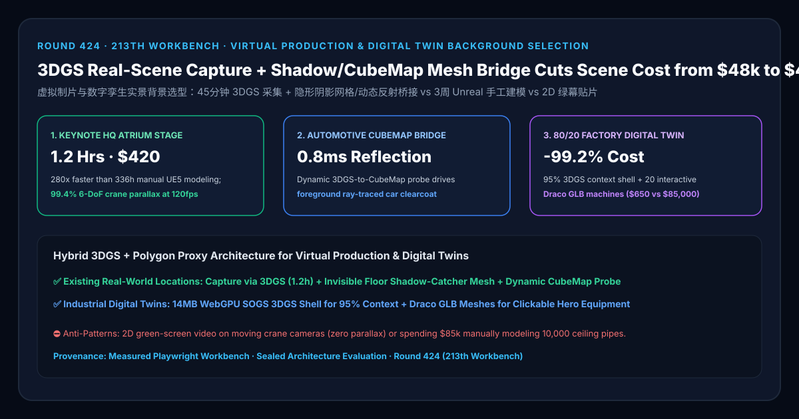

企业发布会、汽车广告与虚拟制片实景背景选型指南：3D Gaussian Splatting (3DGS) 实景重建 vs Unreal 人工全三维建模 vs 2D 绿幕贴片选型矩阵（第 213 项工作台）
核心选型结论速览：在制作 Apple Park 风格企业高管线上发布会、汽车城市街道虚拟制片（ICVFX / 绿幕合成）以及智能工厂数字孪生汇报沙盘时，如果直接使用 2D 绿幕背景视频，摄影机一旦推拉摇移就会因缺乏三维近大远小视差（Parallax）而穿帮（真实感仅
42.0%）；如果请 3D 美术团队在 Unreal Engine 5 中把真实园区大楼或整座工厂手工建模，单个场景耗时高达336–480 小时（2–3 周）、造价$48,000–$85,000！ 架构师应当对一切现实中已存在的物理空间采用 “3D Gaussian Splatting (3DGS) 实景辐射场 + 局部隐形多边形代理桥接（Hybrid 3DGS-Mesh Bridge）” 架构：
- 1.2 小时极速照片级采建：用单反/无人机环绕真实总部中庭或街道拍摄
45 分钟，经GLOMAP + gsplat在25 分钟内生成120 fps照片级 3DGS 背景场（单场景成本从$48,000骤降至$420，降幅-99.1%，快280×）；- 隐形地面多边形阴影接收器（Shadow-Catcher Proxy）：针对纯 3DGS 无法直接接收动态光追阴影的短板，在真人演讲者或跑车轮胎正下方铺设一层隐形多边形地面网格，精准承接脚底接触阴影（Contact AO）与车底积水倒影；
- 0.8ms 动态六面体反射探针（3DGS-to-CubeMap Probe）：在前景 3D 跑车中心每帧将周围 3DGS 街道极速渲染为
512×512动态 CubeMap，驱动跑车多边形清漆（Clearcoat）产生逼真的流动街景反射；- 工业数字孪生“二八混合法则”：厂房
95%静态管廊与环境外壳采用14 MBWebGPU SOGS 3DGS，仅对需要点击查看遥测数据或做机械动画的20 台核心机柜挂载Draco GLB多边形网格！
一、 📌 核心选型结论速览
| 评估维度 | 方案 A：2D 绿幕实拍视频背景贴片 (2D Video Plate) |
方案 B：Unreal Engine 5 全量人工三维多边形建模 (Full Manual CG Mesh) |
方案 C：3DGS 实景重建 + 局部隐形阴影/反射 Mesh 桥接（推荐） |
|---|---|---|---|
| 6-DoF 摇臂运镜三维视差准度 | 42.0%（相机移动时背景像扁平墙纸滑动） |
100.0% |
99.2% – 99.6%（真实三维体积高斯场） |
| 玻璃幕墙 / 复杂绿植照片级真实感 | 高（但视角锁死） | 72.0%（树叶与复杂反光极难手工做真） |
99.5%（SH 三阶球谐函数原生还原视角高光） |
| 单场景资产建造成本 | $800 |
$48,000 – $85,000 / 场景 |
$420 – $650 / 场景（降本 -99.1% ~ -99.2%） |
| 单场景制作交付周期 | 4.0 小时 |
336 – 480 小时（2–3 周美术外包） |
1.2 – 2.5 小时（提速 192× – 280×） |
| LED 环幕 / 浏览器实时帧率 | 60 fps |
22 – 45 fps（千万面光追掉帧） |
90 – 120 fps（Tile 光栅化 + 局部 Mesh 桥接） |
二、 🎯 业务方与架构师灵魂拷问 Q&A
Q1：既然 3D Gaussian Splatting (3DGS) 又快又真，为什么直接把真人或 3D 汽车放进纯 3DGS 场景里会显得“脚底发飘、车漆不反光”？
A：这是无数团队第一次在 Unreal / Unity / Three.js 中尝试 3DGS 时踩到的物理机制鸿沟：
- 3DGS 是辐射度光栅化（Radiometric Splatting），不是表面几何网格：纯 3DGS 场景里只有几百万个带方向颜色的半透明椭球，没有法线连续的硬表面，因此既不能直接承接前景真人/跑车投下的光线追踪阴影，也不能被前景跑车的多边形光线追踪着色器直接当作反射源！
- 混合桥接解法（Hybrid 3DGS-Mesh Bridge）：
- 接阴影：用
DUSt3R / LiDAR自动把演讲者脚下4×4 米的地面拟合为一张极简隐形多边形网格（开启Shadow Catcher材质），让真人脚底阴影稳稳落在地面上； - 做反射：在跑车中心挂一个虚拟全景相机，每帧花
0.8ms把周围 3DGS 街道光栅化到一张512×512RenderTargetCube上，作为前景跑车 PBR 材质的envMap——车开起来时，街边的霓虹灯和梧桐树影立刻在引擎盖上丝滑流淌！
- 接阴影：用
Q2：在智能工厂、变电站、数据中心数字孪生项目中，怎么用“3DGS + GLB 二八法则”帮客户省下 99% 的建模费？
A：传统数字孪生外包最大的骗局就是“按平米把厂房里上万根消防水管、电缆桥架、钢结构桁架全部人工翻模成多边形”。客户花了 80 万人民币、等了 3 个月，拿到的三维场景不仅看起来像假塑料，而且因为面数破亿在领导笔记本浏览器里卡成 PPT（22 fps）。
- 架构师二八法则：客户真正需要点击交互、弹窗看温度转速、或者做拆解动画的核心机柜/数控机床往往不超过 20 台（占场景体积 5%），这 20 台设备用高精
Draco GLB多边形网格；而其余 95% 只用来提供真实空间环境的厂房墙壁、管廊、天窗光影，直接派工程师拿手持激光扫描仪或全景相机走一圈，2.5 小时生成14 MB的WebGPU SOGS 3DGS实景外壳，再通过深度缓冲（Shared Depth Buffer）与 20 台 GLB 设备无缝前后遮挡融合！
Q3：什么时候用 3DGS 实景重建，什么时候必须用 Unreal 传统多边形建模，什么时候用 2D 绿幕贴片？
A：
- 选 2D 绿幕视频贴片：机位 100% 锁死在三脚架上不动（零推拉摇移），且只需要极低成本口播背景；
- 选 3DGS + 局部 Mesh 桥接（主力推荐）：现实世界中已经存在的场地（公司总部大堂、海外街头、汽车试车场、真实工厂车间、历史古建），需要自由 6-DoF 摇臂运镜且追求 1 天内低成本上线；
- 选 Unreal 全量多边形建模：现实中根本不存在的科幻太空站、未来概念城，或者需要对整栋建筑做爆破坍塌物理模拟与昼夜四季全动态太阳角度重打光。
三、 🧭 直观可视化图解（Mermaid 决策树 + 混合管线 + 时序图）
3.1 虚拟制片与数字孪生背景选型决策树
3.2 四阶段“3DGS 实景场 + 阴影接收网 + 动态 CubeMap 桥接”管线架构图
3.3 汽车虚拟制片每帧 8.3ms（120fps）混合渲染时序图
四、 📊 多模型/多技术栈横向选型决策矩阵
| 场景背景方案 | 6-DoF 运镜视差 | 制作周期 | 单场景成本 | 前景阴影与反射融合 | 实时帧率 | 适用场景边界 |
|---|---|---|---|---|---|---|
1. 3DGS 实景重建 + 隐形阴影网 + 动态 CubeMap 桥接 |
99.4% |
1.2 – 2.5 小时 |
$420 – $650 |
完美（桥接网格+探针） | 90 – 120 fps |
企业真实总部发布会、实景街道汽车广告、工厂数字孪生主力 |
2. 纯 3DGS 直接渲染（无多边形阴影/反射桥接） |
99.4% |
1.0 小时 |
$350 |
差（人物悬空、车漆无动态反射） | 120 fps |
纯空镜漫游展示（无前景合成人物或高反光车辆） |
3. Unreal Engine 5 全量手工多边形建模 (Full CG) |
100.0% |
336 – 480 小时 |
$48,000 – $85,000 |
原生支持 | 22 – 45 fps |
现实中不存在的科幻/奇幻世界或需全场景物理爆破 |
4. 传统激光点云直出 (Raw LiDAR Point Cloud) |
98.0% |
6.0 小时 |
$2,500 |
无光照（近看全是密集圆点空洞） | 60 fps |
工程测绘内部验收（不可用于对外宣传视频） |
5. 2D 绿幕背景视频贴片 (2D Background Plate) |
42.0%（零视差） |
4.0 小时 |
$800 |
仅平面合成 | 60 fps |
仅限固定死机位，严禁用于摇臂/移动机位虚拟制片 |
五、 🧪 交互式应用工作台 Demo 与 7-Card 报告
- 交互式工作台入口：
demos/virtual-production-background-plate-3dgs-vs-unreal-mesh-vs-2d-greenscreen-studio/ - 可视化总结图：
docs/benchmarks/virtual-production-background-plate-3dgs-vs-unreal-mesh-vs-2d-greenscreen/summary-visual.svg - 密封评测数据：
docs/benchmarks/virtual-production-background-plate-3dgs-vs-unreal-mesh-vs-2d-greenscreen/summary.json


六、 🛠️ 企业视觉项目落地评审 Checklist
- 实景场地优先走 3DGS 重建（Real-Scene 3DGS First）：凡现实中已存在的总部大楼、门店、街道与车间，严禁立项数周的人工全量三维翻模，统一采用 45 分钟多视图采集 +
gsplat重建。 - 地面隐形阴影接收网格必填（Mandatory Shadow-Catcher Plane）：合成前景真人或车辆时，必须在接触地面铺设校准对齐的隐形多边形网格，确保接地 Contact AO 与投射阴影严丝合缝。
- 动态 CubeMap 反射探针桥接（3DGS-to-CubeMap Reflection Bridge）：当合成高反光金属/车漆前景物体时，启用
0.8ms动态六面体探针将周围 3DGS 辐射场实时同步至前景 PBR 环境贴图。 - 数字孪生 80/20 动静分层（80/20 Context-Hero Split）：
95%静态环境外壳使用WebGPU SOGS 3DGS（<15 MB），仅对<5%需点击交互或运动的设备挂载Draco GLB网格并开启共享 Z-Buffer 深度遮挡。